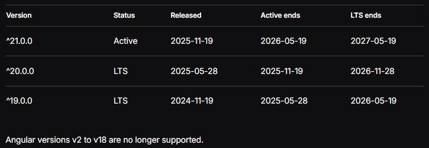
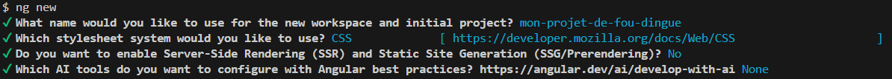
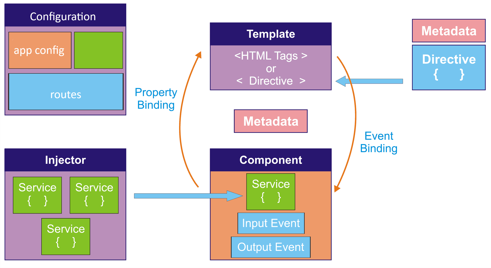
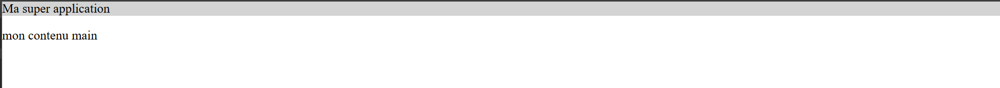

Angular
C'est quoi Angular ?
Angular est un framework front-end développé par Google pour créer des applications web modernes, robustes et maintenables
- Basé sur TypeScript
- Architecture orientée composants
- Pensé pour les applications SPA (Single Page Application)
- Très structuré by design
- Très utilisé en contexte professionnel / entreprise
Angular vs AngularJS
-
AngularJS :
- Crée par Misko Hevery (Google) en 2010
- Framework JavaScript Google, MVC, two-way data-binding
-
Angular 2+ :
- Refonte totale (AngularJS ≠ Angular)
- Par Misko Hevery + équipe angular en 2016
- TypeScript, architecture par composants, CLI
Angular
≠
AngularJS
(Pas le peine de chercher de la doc Angular dans la doc AngularJS)
Date clé Angular
-
Angular 2 (2016) à 16 (2023)
- montée en maturité (forms et HTTP stabilisés)
- performances
- tooling (CLI)
- Ivy*
-
Angular 16+ (2013) à 21: Baptisé renaissance
- Départ du lead dev
- Signaux (gestion d'état)
- Perf, DX amélioré (moins de code boilerplate)
- SSR / hydration simplifiés
A savoir: Du code Angular 2 marche dans un projet Angular 21
*Ivy est le moteur de rendu d'Angular qui compile les composants de façon plus efficace afin de réduire la taille des bundles, améliorer les performances et accélérer la compilation des applications
Version Angular
Une version tout les 6 mois (voir ici)

Liens utiles
Angular vs Vue vs React
- Angular : framework complet (routing, HTTP, forms intégrés), structurant, idéal pour les grosses applications
- React : bibliothèque orientée composants, très flexible, nécessite des librairies externes (routing, state management)
- Vue : framework progressif, simple à prendre en main, bon compromis entre Angular et React
-
Cas d'usage :
- Angular : projets structurés, équipes importantes
- React : produits très dynamiques, écosystème riche
- Vue : projets rapides, pédagogie, petites équipes
Choix du cours
- Angular 21
- Courbe d'apprentissage moins grande
- (Quelques notions de "comment c'était avant")
- Prérequis
- En dev: Node/Npm (ajout de lib, build, start dev...)
- Typescript
- Du CSS
-
Un IDE: vscode, intelij,...
- Pour les utilisateurs de VSCode installer l'extension Angular Language Service
Plan de cours
Création premier projet
structure
fichiers de conf
Installation Angular CLI
npm install -g @angular/cli # -g pour global installation
ng version
la cli constitue l'interface principale pour créer, développer, tester et livrer une application Angular.
Commandes principales de @angular/cli
| ng new | crée un nouveau projet Angular avec une configuration initiale complète |
| ng serve | lance un serveur de développement avec rechargement automatique |
| ng build | compile l'application pour le développement ou la production |
| ng generate | génère du code standardisé comme composants, services et routes |
| ng test | exécute les tests unitaires |
| ng lint | analyse la qualité et la conformité du code |
| ng add | ajoute et configure automatiquement des dépendances Angular compatibles |
Créer une nouvelle application
ng new mon-projet-de-fou-dingue
cd mon-projet-de-fou-dingue
npm start
Les options classiques qu'on met en place: 
TP6
- Installer angular cli en global
- Créer un nouveau projet angular
- Installer les dépendances
- Lancer le serveur de dev + ouvrir l'appli
- Parcourir les fichiers checker un peu le contenu
Structure d'un projet Angular
tp6
├─ angular.json // configuration du workspace Angular (build, serve, assets)
├─ package-lock.json
├─ package.json // dépendances, scripts du projet
├─ public // dossier d'assets utilisé dans l'appli
│ └─ favicon.ico
├─ src
│ ├─ app
│ │ ├─ app.config.ts // configuration globale de l'application (providers, router, http)
│ │ ├─ app.routes.ts // définition du routage principal
│ │ ├─ app.ts // composant racine de l'application
│ │ ├─ app.html // template HTML du composant racine
│ │ ├─ app.css // styles CSS du composant racine
│ │ └─ app.spec.ts // tests unitaires du composant racine
│ ├─ index.html // page HTML hôte de l'application Angular
│ ├─ main.ts // point d'entrée, bootstrap de l'application
│ └─ styles.css // styles globaux partagés de l'application
├─ tsconfig.app.json // configuration TypeScript spécifique à l'application
├─ tsconfig.json // configuration TypeScript globale du projet
└─ tsconfig.spec.json // configuration TypeScript dédiée aux tests
Bootstrap Angular
index.html // page hôte Angular
↓ (<app-root>)
main.ts // point d'entrée de l'application, angular n'est pas encore démarré
// du coup on peut faire des trucs avant le bootstrap
↓ bootstrapApplication(AppComponent, appConfig) // démarre l'application angular avec :
↓ ↓
app.config.ts + AppComponent <app-root>
// configuration globale de l'application // composant racine de l'application
// (providers, router, http)
Fichiers de configuration TypeScript
Angular s'appuie sur plusieurs fichiers tsconfig afin de séparer la configuration TypeScript selon le contexte d'exécution. Cette séparation permet d'optimiser la compilation et d'adapter les règles aux usages spécifiques.
| Fichier | Rôle |
|---|---|
| tsconfig.json | configuration TypeScript globale du projet elle définit les options communes comme strict, target et module |
| tsconfig.app.json | configuration spécifique à l'application utilisée pour la compilation du code exécuté dans le navigateur |
| tsconfig.spec.json | configuration dédiée aux tests unitaires inclut les fichiers spec et les types nécessaires au framework de test |
Les fichiers tsconfig.app.json et tsconfig.spec.json étendent tsconfig.json afin d'hériter d'une base commune
Archi
Archi
Angular est basé sur une architecture modulaire et orientée composants. Les principales briques sont :
- Composants : unités réutilisables d'interface utilisateur
- Services : logique métier et partage de données
- Directives : manipulent le DOM et le comportement des éléments
- Pipes : transforment les données pour l'affichage
- Routage : navigation entre différentes vues
Les composants Angular
Composants - Base
- Bloc fondamental de toute application Angular
- C'est ce que voit l'utilisateur
- Représente une partie d'une page web
- Un composant contient :
- Un décorateur @Component avec sa configuration
- Un template HTML qui contrôle le rendu DOM
- Un sélecteur CSS pour l'utilisation dans un template
- Une classe TypeScript avec le comportement
// Composant avec template inline
@Component({
selector: 'user-profile',
imports: [],
styles: `p { color: blue; }`,
template: `
User profile
This is the user profile page
`,
})
export class UserProfile {}// Composant avec template et styles externes
@Component({
selector: 'user-profile',
imports: [],
templateUrl: 'user-profile.html',
styleUrl: 'user-profile.css',
})
export class UserProfile {}Arbre de composants
@Component({
selector: 'user-profile',
imports: [UserBiography, ProfilePhoto],
template: `
TP6(b)
- Mettre en place cette arborescences
tp6
...
├─ src
│ ├─ app
│ │ ├─ core/ // services singleton, logique transverse
│ │ │ ├─ services/
│ │ │ └─ guards/
│ │ ├─ pages/ // pages de l'appli
│ │ ├─ features/ // domaines fonctionnels (lazy loading)
│ │ │ ├─ entete/
│ │ │ └─ <...>
│ │ ├─ shared/ // composants et utilitaires réutilisables
│ │ │ └─components/
│ │ ├─ app.routes.ts // routage principal
│ │ └─ app.component.ts // composant racine
...
TP7
- Dans le même dossier que pour le TP6
- Créer un composant "Entete" avec la cli qui affiche "Ma super application"
- Inclure Entete dans le template du composant racine (app.ts)
- Vérifier que le message s'affiche dans l'application
- Faire en sorte que Entete prenne toute la largeur de l'écran
- Ajouter un style de fond et un peu de padding au composant Entete
- Créer un composant "Contenu" avec une balise
- Ajouter une balise main dans app qui contient le composant Contenu

Interface dynamiques avec les composants
(On va tout voir dans les slides suivantes)
@Component({
selector: 'app-salut',
imports: [],
template: `{{titre()}}
@if(titreAChange()) {
Le titre a été changé !
}`,
})
export class Salut {
public titre = signal("Bonjour tout le monde !");
public titreAChange = signal(false);
changerLeTitre() {
this.titreAChange.set(true);
this.titre.set("Salut les bg !");
}
}Interface dynamiques avec les composants
// Interpolation : afficher des valeurs dans le HTML
{{titre()}}
// Property binding : lier une propriété d'un élément HTML à une propriété du composant
// Event binding : lier un événement d'un élément HTML à une méthode du composant
// Control flow : modifier la structure du DOM en fonction d'une condition
@if(titreAChange()) {
Le titre a été changé !
}
Interpolation
L'interpolation permet d'afficher des valeurs dans le HTML
Utilisateur : {{ username() }}
Total : {{ total() }}
@Component({...})
export class UserProfile {
public username = signal('Alice');
public total = signal(42);
}
Property binding
Le property binding permet de lier une propriété DOM à une expression.

- Utilise la syntaxe [property]
- Fonctionne avec les propriétés DOM et directives
Top des property bindings Angular
| Property binding | Usage | Exemple |
|---|---|---|
| disabled | Activer ou désactiver un contrôle |
|
| value | Définir la valeur d'un champ |
|
| checked | Cocher / décocher checkbox ou radio |
|
| src | Source d'une image ou iframe |
|
| alt | Texte alternatif d'image, accessibilité |
|
| class | Ajouter / retirer une classe CSS |
|
| style | Appliquer un style inline dynamique |
|
| hidden | Masquer un élément (sans le retirer du DOM) |
|
| title | Afficher une info-bulle native |
|
Event binding
L'event binding permet de réagir aux événements utilisateurs.
@Component({
selector: 'user-profile',
imports: [],
template: `
`
})
export class UserProfile {
onSave() {
console.log('Profil sauvegardé !');
}
onInput(event: Event) {
const input = event.target as HTMLInputElement;
console.log('Input value:', input.value);
}
} - Utilise la syntaxe (event)
- Appelle une méthode du composant
- Les events natifs du DOM et ceux qu'on va dev
Top événements DOM essentiels
| Événement | Usage principal | Exemple Angular |
|---|---|---|
| click | Action utilisateur principale, boutons |
|
| input | Saisie temps réel, formulaires réactifs |
|
| change | Validation d'un champ, select, checkbox |
|
| submit | Envoi et validation d'un formulaire |
|
| keydown | Raccourcis clavier, navigation |
|
| keyup | Recherche, filtrage après saisie |
|
| focus | Entrée dans un champ, accessibilité |
|
| blur | Sortie de champ, validation |
|
Two-way binding
Le two-way binding combine lecture et écriture.
(ca existe perso je fais tout pour pas m'en servir)
- Surtout utilisé avec les formulaires simples
- À éviter au profit des Reactive Forms
Control flow natif
Angular fournit des structures de contrôle intégrées au langage de template.
@if (isLoggedIn()) {
Bienvenue
} @else {
Veuillez vous connecter
}
@for (item of items(); track item.id) {
{{ item.name }}
}
@let toto = 'salut les champions'
{{toto}}
Content projection (ng-content)
Recevoir du contenu HTML depuis un parent et de l'insérer à des emplacements précis de son template grâce à <ng-content>
- Réutilisation de composants
- Exemple: bouton générique, carte, modale...
- Exemple: ici
// Le fils controle l'insertion de contenu
@Component({
selector: 'app-card',
template: `
`
})
export class CardComponent {}
Titre de la carte
Contenu principal de la carte
TP8
- Ajouter un titre "Bienvenue" dans le code TS de Contenu et l'afficher dans l'HTML
- Ajouter un titre "TP8" dans le HTML de Contenu
- Créer un composant PropertyEtEventBinding et l'ajouter sous le HTML du composant Main
- Ajouter un bouton et une checkbox. Au clic sur le bouton, il faut que la checkbox s'active ou se désactive.
- Créer un composant Carte et utiliser ng-content pour y injecter des données. Mettre en place une carte dans le HTML du composant Contenu qui affiche PropertyEtEventBinding.
- Créer un composant ListePersonnes. Créer une liste de personnes (dans le TS) avec un nom et un âge, puis afficher cette liste dans une balise ul/li.
- Créer un composant CouleurCestBeau. Créer un select HTML contenant "vide" ou "rouge". Lorsque le select vaut "rouge", afficher le texte "c'est trop beau".
- Ajouter du padding, des marges et une bordure dans le composant Carte et améliorer la mise en page des différentes cartes.
Angular Signals
Angular Signals
(Nouveau) Mécanisme réactif natif d'Angular pour gérer l'état
- Ils remplacent de nombreux usages complexes de RxJS pour l'état local
- Ils sont synchrones, prédictibles et typés
- Angular sait exactement quand recalculer et rerendre
Créer un signal
Un signal contient une valeur et notifie automatiquement les consommateurs lors des changements.
import { signal } from '@angular/core';
const count = signal(0);
count.set(1);
count.update(value => value + 1);
- signal() crée un état réactif
- set remplace la valeur
- update applique une transformation
Lire un signal
La lecture d'un signal se fait comme une fonction.
console.log(count());
Dans un template Angular, la lecture est automatique.
Valeur : {{ count() }}
Signals et composants
Les signals sont idéaux pour l'état local d'un composant.
@Component({
selector: 'counter',
template: `
{{ count() }}
`,
changeDetection: ChangeDetectionStrategy.OnPush
})
export class CounterComponent {
count = signal(0);
increment() {
this.count.update(v => v + 1);
}
}
Computed signals
Permet de dériver un état à partir d'autres signals
const doubleCount = computed(() => count() * 2); // Dépend de count
// Recalculer uniquement si count change
count.set(2);
console.log(doubleCount()); // Affiche 4
count.set(2);
console.log(doubleCount()); // Affiche 4 (car pas de changement)
count.set(5);
console.log(doubleCount()); // Affiche 10
count.update(v => v + 1);
console.log(doubleCount()); // Affiche 12
Effect
Exécute du code en réaction aux changements de signals
import { effect } from '@angular/core';
effect(() => {
console.log('count changed:', count());
});
- Utile pour le logging, les appels API ou le stockage local
- Ne doit pas modifier directement l'état
TP9
- Ajouter un titre "TP9" dans le HTML de Contenu
- Créer un composant ChiffreLePlusGrand et l’afficher dans une carte
- Créer un champ input de type number et un bouton « Ajouter ». Au clic sur le bouton « Ajouter », le chiffre renseigné dans l’input est ajouté à une liste de nombres.
-
Créer dans le template HTML deux colonnes :
– une colonne contenant la liste des nombres ;
– une autre colonne affichant le plus grand chiffre de la liste.
Input/Output
Input Signals
Les Input Signals permettent de déclarer des entrées de composant sous forme de signals, rendant les dépendances de données explicites et automatiquement réactives
// user-profile.component.ts
@Component({
selector: 'app-user-profile',
template: `
Utilisateur : {{ name() }}
Age : {{ age() }}
`
})
export class UserProfileComponent {
name = input.require<string>() // obligatoire
age = input<number>() // optionnel
}
Output Signals
Les Output Signals permettent d'émettre des événements vers le parent en utilisant une API basée sur les signals, plus simple et plus typée que EventEmitter.
- Déclaration via output()
- $event contient la valeur émise
- Utilisation avec la syntaxe (event)
// counter.component.ts
@Component({
selector: 'app-counter',
template: `
`
})
export class CounterComponent {
countChange = output<number>()
private count = 0
increment() {
this.count++
this.countChange.emit(this.count)
}
}
Bonnes pratiques
- Templates courts et lisibles
- Une responsabilité par composant
- Logique métier dans la classe
TP10
- Ajouter un titre "TP10" dans le HTML de Contenu
- Créer un composant DetailPersonne et l’afficher dans une carte
- Modifier le composant ListePersonnes
- Ajouter un bouton « Voir » à la fin de chaque personne de la liste. Ce bouton s’affiche uniquement si l’input "afficherBoutonVoir" vaut true (par défaut, le mettre à false).
- Au clic, un output event de type "Personne" (à créer) est émis avec la personne sélectionnée.
- Ajouter une autre carte contenant le composant ListePersonnes dans Contenu. Le deuxième composant ListePersonnes doit avoir "afficherBoutonVoir" à true.
- Le composant DetailPersonne doit afficher la personne sélectionnée.
Services
Service : base
Un service est une classe TypeScript réutilisable qui encapsule une logique métier ou une fonctionnalité transversale
- Accès API (HTTP)
- Partage d'état
- Auth, logs, erreurs, caches
À quoi sert l'injection de dépendances ?
- Découpler les classes entre elles
- Éviter la création manuelle des dépendances
- Centraliser la gestion des instances
- Faciliter les tests unitaires (mocks, fakes)
- Améliorer la maintenabilité et l'évolutivité du code
Créer un service (providedIn: 'root')
// calculator.service.ts
import { Injectable } from '@angular/core';
@Injectable({ providedIn: 'root' }) // singleton global
export class CalculatorService {
add(x: number, y: number): number {
return x + y;
}
}
// app.component.ts
import { Component, inject } from '@angular/core';
import { CalculatorService } from './calculator.service';
@Component({
selector: 'app-root',
template: `Total : {{ total() }}
`
})
export class AppComponent {
private calc = inject(CalculatorService);
private total = signal(this.calc.add(5, 10));
}
- @Injectable() est une décoration qui indique à Angular que la classe est un service
- providedIn: 'root' signifie que le service est disponible dans toute l'application (la plupart du temps ce qu'on veut)
- inject() permet d'obtenir une instance du service dans un composant ou un autre service
Portée locale : providers dans le composant
Si le service est dans providers d'un composant, Angular crée une instance propre à ce composant et ses enfants
import { Component } from '@angular/core';
import { CalculatorService } from './calculator.service';
@Component({
selector: 'app-local',
standalone: true,
providers: [CalculatorService],
template: `Local total : {{ total() }}
`
})
export class LocalComponent {
private calc = inject(CalculatorService);
private total = signal(this.calc.add(1, 2)) ;
}
Signals : état dans un service
Un service peut héberger un état partagé via signals
@Injectable({ providedIn: 'root' })
export class CounterStore {
private _count = signal(0);
public readonly count = this._count.asReadonly();
inc(): void {
this._count.update(v => v + 1);
}
reset(): void {
this._count.set(0);
}
}
@Component({
selector: 'app-counter',
standalone: true,
template: `
Count : {{ store.count() }}
`
})
export class CounterComponent {
store = inject(CounterStore);
}
Note: asReadonly() pour exposer un signal en lecture seule
(impossible de bidouiller la valeur depuis l'extérieur)
TP11
- Ajouter un titre "TP11" dans le HTML de Contenu
- Créer un composant ListePersonnesAvecService et l’afficher dans une carte
- Créer un service PersonneService
- Désormais, c’est PersonneService qui doit connaître la liste des personnes : créer une liste (pas encore dans un signal pour commencer).
- Le composant ListePersonnesAvecService va récupérer cette liste et l’afficher.
- Ajouter un bouton « gommer > 33 » permettant de supprimer les personnes de plus de 33 ans.
- Rien ne se passe : c’est normal, vous n’avez pas utilisé de signal. Tout passer en signal.
- Créer un composant DetailPersonneAvecService et l’afficher dans une carte
- Ajouter un bouton « Voir » à la fin de chaque ligne dans ListePersonnesAvecService.
- Au clic sur « Voir », la personne sélectionnée est stockée dans le service PersonneService.
- Le composant DetailPersonneAvecService affiche cette personne.